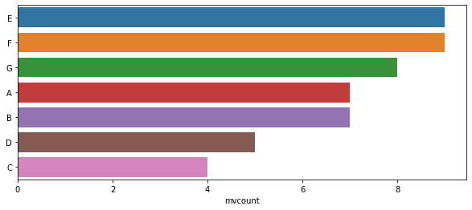
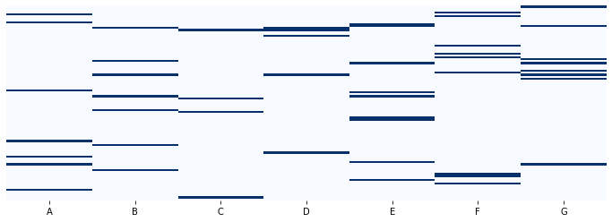

Missing Value Analysis
Page content
Create a synthetic dataframe (with missing values)
from sklearn.datasets import make_classification
numfeat = 7
numrows = 100
sample_df = pd.DataFrame(make_classification(n_features = numfeat)[0]) #We just take the features part and discard the label part
sample_df.shape
(100, 7)
#Let us give the columns alphabetical names
colnames = [chr(0x41+i) for i in range(numfeat)]
sample_df.columns = colnames
print(sample_df)
A B C D E F G
0 -0.127194 1.236139 -0.992594 0.642372 -0.301938 -0.338470 NaN
1 -0.756942 -0.379475 0.854811 0.297301 -0.100486 0.227557 0.939396
2 -1.133766 -1.350423 -1.142068 0.088902 -1.240435 0.326618 2.098233
3 -0.833053 -0.685877 -1.295095 0.204945 -1.278842 NaN 1.270936
4 NaN -0.340500 0.351410 0.447896 0.372048 0.260806 1.075568
.. ... ... ... ... ... ... ...
95 -1.440925 0.963312 2.160002 1.334175 0.953738 0.763906 0.298397
96 -1.182199 -1.223739 -0.269553 0.176725 -0.117301 -0.034381 2.024914
97 -0.783330 0.183404 -0.798328 0.570219 1.000458 0.414616 0.462967
98 0.720470 -0.963628 NaN -0.886744 -0.170301 -0.647375 0.276774
99 -3.419854 -0.969928 -0.721836 1.682513 1.072179 1.907760 3.586141
[100 rows x 7 columns]
#Having got this dataframe, let us pepper it with random np.nan values.
import random
import numpy as np
#list of rows and columns to drop values from
row_list = list(range(numrows))
col_list = list(range(numfeat))
random.seed(42) #to get reproducible results
#Since we have 2000 values, let us populate about 50 NaNs in the dataset.
for i in range(50):
random_row = random.choice(row_list)
random_col = random.choice(col_list)
sample_df.iloc[random_row,random_col] = np.nan
print(sample_df)
A B C D E F G
0 -0.127194 1.236139 -0.992594 0.642372 -0.301938 -0.338470 NaN
1 -0.756942 -0.379475 0.854811 0.297301 -0.100486 0.227557 0.939396
2 -1.133766 -1.350423 -1.142068 0.088902 -1.240435 0.326618 2.098233
3 -0.833053 -0.685877 -1.295095 0.204945 -1.278842 NaN 1.270936
4 NaN -0.340500 0.351410 0.447896 0.372048 0.260806 1.075568
.. ... ... ... ... ... ... ...
95 -1.440925 0.963312 2.160002 1.334175 0.953738 0.763906 0.298397
96 -1.182199 -1.223739 -0.269553 0.176725 -0.117301 -0.034381 2.024914
97 -0.783330 0.183404 -0.798328 0.570219 1.000458 0.414616 0.462967
98 0.720470 -0.963628 NaN -0.886744 -0.170301 -0.647375 0.276774
99 -3.419854 -0.969928 -0.721836 1.682513 1.072179 1.907760 3.586141
[100 rows x 7 columns]
Count the missing values
Which are the columns with the most missing values?
mvcount_df = pd.DataFrame(sample_df.isnull().sum().sort_values(ascending=False),
columns = ['mvcount'])
#We get a dataframe indexed on the feature name
mvcount_df['mvpc'] = mvcount_df['mvcount']/sample_df.shape[0] #get the missing value percentage
print(mvcount_df)
mvcount mvpc
E 9 0.09
F 9 0.09
G 8 0.08
A 7 0.07
B 7 0.07
D 5 0.05
C 4 0.04
Visualization as a bar graph
import matplotlib.pyplot as plt
import seaborn as sns
fig, ax = plt.subplots(1,1,figsize=(10,4))
sns.barplot(x= mvcount_df['mvcount'], y= mvcount_df.index, ax=ax)
<AxesSubplot:xlabel='mvcount'>

Visualization as a heatmap
import seaborn as sns
import matplotlib.pyplot as plt
fig,ax = plt.subplots(1,1,figsize=(12,4))
sns.heatmap(sample_df.isnull(), yticklabels=False, cbar=False, cmap='Blues', ax=ax)
<AxesSubplot:>

To drop or not to drop
Dropping or not dropping rows or columns is a decision that depends on the particular dataset and the purpose of your analysis. All we will do here is learn how to appreciate the implications of dropping rows or columns.
Let us drop the feature with most missing values and see how many rows we lose.
#From our example E is the one with the most missing values
#We will drop the column E and after that all rows with missing values
print(f"{sample_df.drop(['E'], axis=1).dropna().shape[0]} rows remain after the drop operation" )
65 rows remain after the drop operation
This shows that 65 rows remain after the previous operations. To get the number of rows dropped:
print("No. of rows dropped: ")
sample_df.shape[0] - sample_df.drop(['E'], axis=1).dropna().shape[0]
No. of rows dropped:
35
Depending on the dataset or the purpose of the analysis, we could drop more columns and decide whether losing the data rows is still acceptable for the analysis.
Or we could impute values…, which would be a topic in itself.